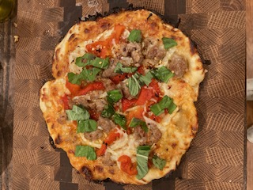

Recipe
Homemade Pizza

Ingredients
Preparation
- Preheat oven to 475 degrees and move top rack to the top
- Place Dough inside a cast iron oiled cast iron skillet
- Add sauce to dough
- Sprinkle Mozzarella on top of sauce
- Add Parmesan cheese around the edges of the pizza touching the edge
- Add any additional toppings
- Place Cast Iron on stove top and heat until dough starts to brown
- Move cast Iron to oven and bake for 4-8 minutes on top rack